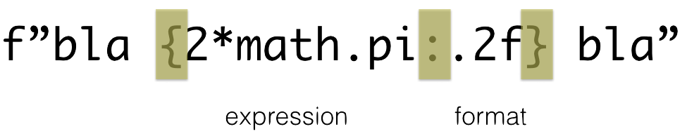
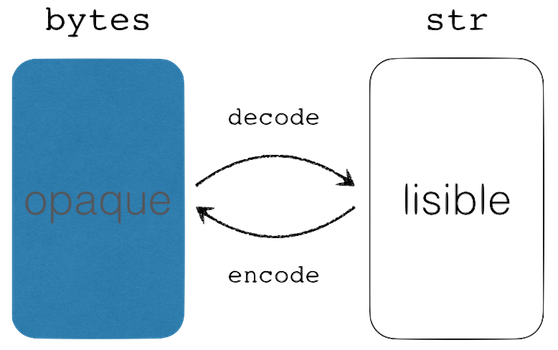
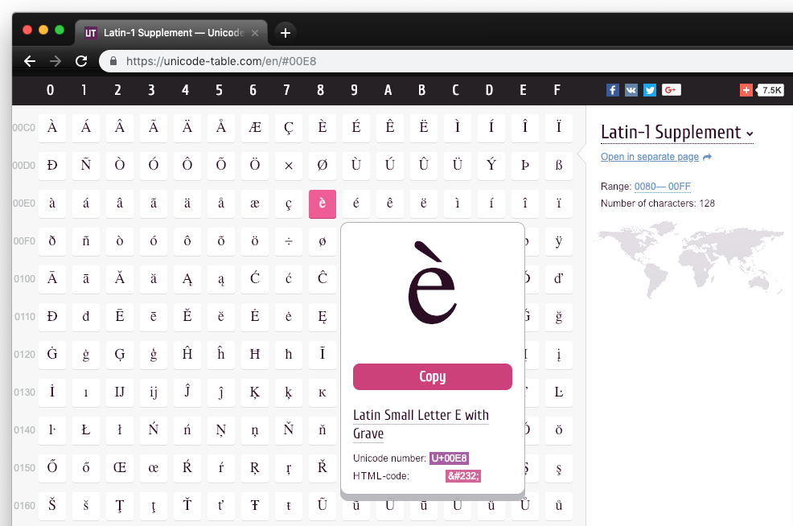
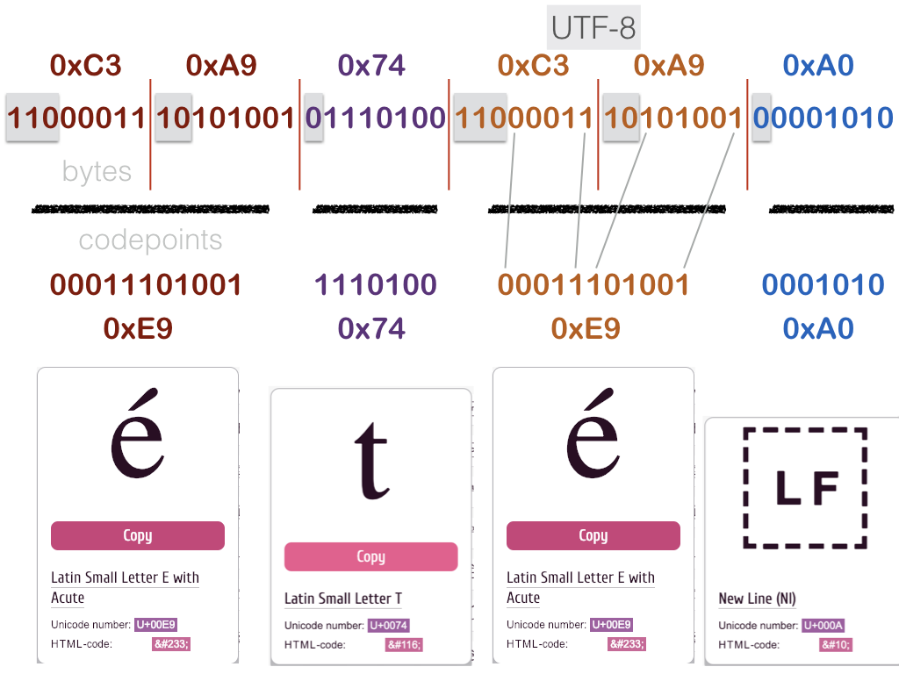
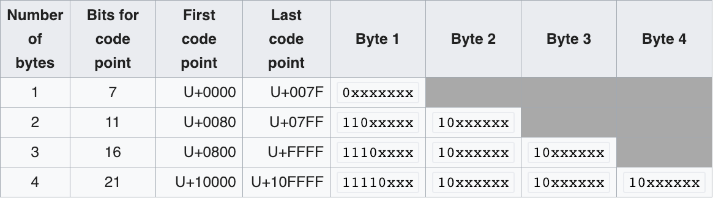

chaines et binaire (str et bytes)¶
rappels¶
les séquences¶
suite finie et ordonnée d’objets
du coup indexable
seq[n]indices commencent à 0
peuvent contenir des duplications
mutable et immutable¶
mutable
list,bytearray
immutable
str,bytes,tuple,range
un chaine - de type str - est une séquence immutable
opérations sur (toutes) les séquences¶
S[i]retourne l’élément d’indice i
len(S)donne la taille en nombre d’éléments
S + Tretourne une nouvelle séquence qui est la concaténation de S et T
S*noun*Sretourne une nouvelle séquence qui est la concaténation de n shallow copies de S
opérations sur les séquences…¶
x in S; selon les types:Truesi un élément de S est égal à x (e.g.list)Truesi S contient x (e.g.str)
S.index(a)retourne l’indice de la première occurrence de a dans S
S.count(a)retourne le nombre d’occurrences de a dans S
slicing¶
S[i:j]retourneune nouvelle séquence de même type
contenant tous les éléments de l’indice i à l’indice j-1
S[i:j:k]retourneune nouvelle séquence de même type
prenant tous les éléments de l’indice i à l’indice j-1, par sauts de k éléments
slicing¶
on peut compter du début ou de la fin
on peut omettre les bornes
s = "egg, bacon"
s[0:3]
'egg'
# si on omet une borne
# ce sera le début ..
s[:3]
'egg'
# ... ou la fin:
s[5:]
'bacon'
# les indices peuvent être négatifs
s[-3:10]
'con'
# tout entier: une shallow-copy
s[:]
'egg, bacon'
les bornes¶
La convention est choisie pour pouvoir facilement encastrer les slices:
s[0:3]
'egg'
s[3:6]
', b'
s[6:]
'acon'
s[0:3] + s[3:6] + s[6:] == s
True
le pas¶
on peut préciser un pas
peut aussi être négatif
ou omis (défaut 1)
s[0:10:2]
'eg ao'
s[::2]
'eg ao'
s[:8:3]
'e,a'
s[-2::-3]
'obg'
pas d’exception¶
les slices ont un comportement plus permissif que l’indexation
# Si j'essaie d'utiliser un index inexistant
try: s[100]
except Exception as e: print("OOPS", e)
OOPS string index out of range
# par contre avec un slice, pas de souci
s[5:100]
'bacon'
# vraiment..
s[100:200]
''
s[-1]
'n'
s[-3:-1]
'co'
s[:-3]
'egg, ba'
s[::-1]
'nocab ,gge'
# le 2 est inclus et le 0 exclus
s[2:0:-1]
'gg'
s[2::-1]
'gge'
slicing, formes idiomatiques¶
s = [1, 2, 3]
# une copie simple
s[:]
[1, 2, 3]
# copie renversée
s[::-1]
[3, 2, 1]
str et bytes¶
deux cas particuliers de séquences
strpour manipuler du textebytespour manipuler de la donnée brute (des octets)
ATTENTION
les caractères alphanumériques (sans accent)
et la ponctuation tiennent sur 1 octetmais ce n’est pas le cas en général
chaînes de caractères str¶
un cas particulier de séquence
une chaîne de caractères est définie de manière équivalente par des simples ou doubles guillemets (
'ou")on peut ainsi facilement inclure un guillemet
# une chaine entre double quotes
# pas de souci pour les accents
print("c'est l'été")
c'est l'été
# entre simple quotes
print('on se dit "pourquoi pas"')
on se dit "pourquoi pas"
construire une chaîne¶
s = "l'hôtel"
print(s)
l'hôtel
s = 'une "bonne" idée'
print(s)
une "bonne" idée
s = """une très longue phrase
avec saut de ligne"""
print(s)
une très longue phrase
avec saut de ligne
s = ' un backslash \\ un quote \' '
print(s)
un backslash \ un quote '
opérations sur les str¶
toutes les opérations des séquences
s1 = 'abcdéfg'
s2 = 'bob'
len(s1)
7
# concaténation
s1 + s2
'abcdefbob'
'abcdefbob'
s1[-1::-2]
'géca'
'=' * 30
'=============================='
opérations sur les str …¶
par contre ATTENTION un
strn’est pas mutable
try:
s1[2] = 'x'
except TypeError as e:
print("OOPS", e, type(e))
OOPS 'str' object does not support item assignment <class 'TypeError'>
formatage des chaînes : f-strings¶
depuis Python-3.6
utilisez les f-strings
qui évitent les répétitions fastidieuses
entre
{et}: du codeembarqué directement dans le format
n’importe quelle expression
import math
nom, age = "Pierre", 42
f"{nom} a {age} ans"
'Pierre a 42 ans'
f"360° = {2*math.pi} radians"
'360° = 6.283185307179586 radians'
formatage des chaînes de caractères¶

print(f"ᴨ arrondi à deux décimales = {math.pi:.2f}")
ᴨ arrondi à deux décimales = 3.14
formats - scientifiques¶
formats scientifiques usuels: e f et g, cf. printf
x = 23451.23423536563
f'{x:e} | {x:f} | {x:g} | {x:010.1f} | {x:.2f}'
'2.345123e+04 | 23451.234235 | 23451.2 | 00023451.2 | 23451.23'
y = 769876.11434
f'{y:e} | {y:f} | {y:g} | {y:010.2f} | {y:.2f}'
'7.698761e+05 | 769876.114340 | 769876 | 0769876.11 | 769876.11'
Voir aussi pour plus de détails:
https://mkaz.blog/code/python-string-format-cookbook/
formats pour f-string : justification¶
justification: formats < ˆ et >
f"|{nom:<12}|{nom:^12}|{nom:>12}|"
'|Pierre | Pierre | Pierre|'
# on peut aussi préciser avec quel caractère remplir
num = 123
f"|{num:<12}|{num:-^12}|{num:0>12}|"
'|123 |----123-----|000000000123|'
méthodes sur les str¶
de nombreuses méthodes disponibles
s = "une petite phrase"
s.replace('petite', 'grande')
'une grande phrase'
s.find('hra')
12
liste = s.split()
liste
['une', 'petite', 'phrase']
sur les str : split() et join()¶
liste
['une', 'petite', 'phrase']
"".join(liste)
'unepetitephrase'
" ".join(liste)
'une petite phrase'
"_".join(liste)
'une_petite_phrase'
s2 = "_".join(liste)
s2
'une_petite_phrase'
s2.split('_')
['une', 'petite', 'phrase']
str vs bytes¶
contenus binaires et textuels¶
toutes les données ne sont pas textuelles
exemple: fichiers exécutables comme
cmd.exestockage de données propriétaires (.doc, .xls, …)
dès qu’on utilise des données textuelles,
on décode une suite de bits
il faut leur donner un sens
c’est l’encodage
le problème¶
dès que vous échangez avec l’extérieur, i.e.
Internet (Web, mail, etc.)
stockage (disque dur, clef USB)
terminal ou GUI, etc..
vous traitez en fait des flux binaires
et donc vous êtes confrontés à l’encodage des chaines
et notamment en présence d’accents
ou autres caractères non-ASCII
codage et décodage en python¶
le type
bytescorrespond,
comme son nom l’indique,
à une suite d’octetsdont la signification
(le décodage) est à la
charge du programmeur
ce qui n’est pas du tout
le cas du typestrdécodage fait par Python
le programmeur choisit un
encodage (défaut UTF-8)

Unicode¶
une liste des caractères
avec chacun un codepoint - un nombre entier unique
de l’ordre de 137.000 + en Juin 2018 (and counting)
limite théorique 1,114,112 caractères
trois encodages:
UTF-8: taille variable 1 à 4 octets, compatible ASCII
UTF-32: taille fixe, 4 octets par caractère
UTF-16: taile variable, 2 ou 4 octets
l’essentiel sur UTF-8¶
c’est l’encodage le plus répandu aujourd’hui
la famille des ISO-latin et autres cp1252 sont à proscrire absolument
en 2020, c’est de moins en moins un souci
avec UTF-8, les caractères usuels (dits ASCII),
sans accent, sont codés sur 1 octetmais ce n’est pas le cas en général :
les caractères accentués européens
sont codés sur 2 octets
UTF-8 illustré¶
le codepoint du caractère é est 0xe8 c’est-à-dire 232

voici le flux binaire correspondant à la chaine "été\n"

UTF-8 - le codage¶
le nombre d’octets utilisé pour encoder un caractère dépend
du caractère et de l’encodage
texte ASCII : identique en UTF-8
en particulier, ne prennent qu’un octet

UTF-8 et Python: encode et decode¶
text = 'été\n'
type(text)
str
# on compte les
# caractères
len(text)
4
octets = text.encode(encoding="utf-8")
for b in octets:
print(f"{b:02x}", end=" ")
c3 a9 74 c3 a9 0a
# ici par contre on
# compte les octets
len(octets)
6
Unicode et Python: chr et ord¶

# le codepoint du é accent aigu
codepoint = 0xe9
codepoint
233
chr(codepoint)
'é'
ord('é')
233
pourquoi l’encodage c’est souvent un souci ?¶
chaque fois qu’une application écrit du texte dans un fichier
elle utilise un encodage
cette information (quel encodage?) est parfois disponible
dans ou avec le fichier
ex.
# -*- coding: utf-8 -*-HTTP headers
mais le plus souvent on ne peut pas sauver cette information
pas prévu dans le format
il faudrait des métadata
pourquoi l’encodage c’est souvent un souci ?¶
du coup on utilise le plus souvent des heuristiques
ex: un ordinateur (OS) configuré pour
cp-1252applications qui utilisent l’encodage défini pour tout l’ordi
c’est comme ça qu’on reçoit des mails comme
j'ai été reçu Ã\xa0 l'écoleau lieu de
j'ai été reçu à l'école
sans parler des polices de caractères..
# Jean écrit un mail
envoyé = "j'ai été reçu à l'école"
# son OS l'encode pour le faire passer sur le réseau
binaire = envoyé.encode(encoding="utf-8")
# Pierre reçoit le binaire
# mais se trompe d'encodage
reçu = binaire.decode(encoding="cp1252")
# Pierre voit ceci dans son mailer
reçu
"j'ai été reçu Ã\xa0 l'école"